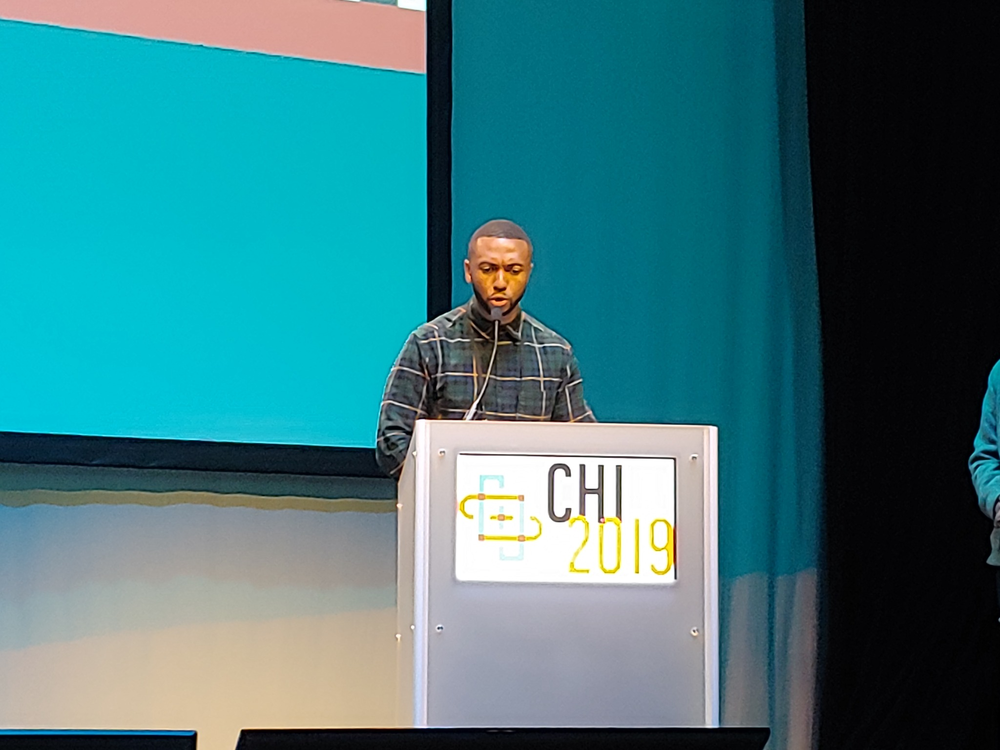

Presenting at ACM CHI 2019. I bring the same commitment to critical inquiry into the classroom, the research community, and collaborative design work.
Learning to see, question, and make.
My teaching brings together interaction design practice, critical perspectives on technology, and reflective inquiry. Students learn to study the world as it is—and to imagine how it could be otherwise.
Principles of Interaction Design
From understanding people and contexts to making and evaluating interactive systems.
Teaching design as an iterative practice
This course introduced core methods of human-centered interaction design: contextual inquiry, research synthesis, personas and scenarios, storyboarding, prototyping, and usability evaluation.
Students worked through design decisions, communicated concepts, and learned to use critique and evidence to improve interactions—not merely polish their presentation.
Understanding the Politics of Urban Artifacts
A graduate seminar on how technology embodies social and political choices.
Drawing on science and technology studies, HCI, and design theory, the course examined smart city infrastructure, automated decision-making, social platforms, and other urban technologies. Students developed the ability to identify political assumptions embedded in technical artifacts and consider their social consequences.
Course activities centered on readings, discussion, critical reflection, and connecting analytical perspectives to real urban systems.
Who benefits from a system?
Whose knowledge and values count?
What does an interface make easy—or difficult—to contest?
How might design support greater public agency?
We Are AI: Taking Control of Technology
Beyond formal university teaching, I helped design and facilitate public AI engagement activities and developed qualitative research on learning experiences and the educational design process.
The We Are AI initiative developed an accessible, peer-learning approach to AI and responsible AI. Its learning-circle format makes room for people without technical backgrounds to discuss the social implications of AI and their own role in shaping its use.
Our co-authored AAAI 2025 paper documents iterative course development, participant engagement, and learning evaluation. My primary contribution was shaping qualitative inquiry into how the classes and design process worked.
Explore We Are AI ↗Study the experience, not just the outcome.
What does a participant understand? Where does discussion open new possibilities? How does the format itself shape participation? These are design questions as much as educational ones.